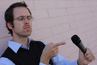
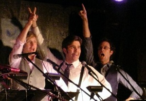
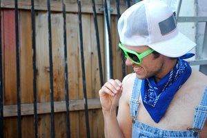

FRANK SMITH
Head Writer / Actor

As an actor, Frank Smith has performed with the Sight Unseen and Sacred Fools theater companies and appeared in numerous Los Angeles and New York stage productions, including Monster, Lucid Sound, and The Celebrated Jumping Frog of Calaveras County. As a writer, Frank has penned the stage plays Forget My Chrome Embrace, a romantic comedy about robots and erotic fan fiction, Stray Dog, a one-man show about the life and work of Akira Kurosawa, and The Superman Chronicles, a cycle of superhero adventures performed in college with alarming disregard for copyright statute. On the internet, he is a co-founder of The Lair of the Dreaded Atrox, where he writes the gritty asphalt-noir graphic novel Kitty-Face Kitty and contributes to Atrox Comics, North America’s foremost clay-sculpted comic strip. Frank attended Northwestern University, where he studied acting and playwriting, and performed in the sketch and improv-based Mee-Ow show with a surprisingly high number of current Lost Moon Radio cast members. He is certified for single sword combat, but only if he is wearing his glasses.
Frank in Action...

With Ryan and Dan, performing "Slaves Made It!"

On the set of the "Chicken vs. Egg" music video.